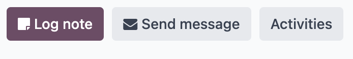

After installing this module, the buttons in the chatter component will automatically update to reflect the new behavior.
No additional configuration is required.
Swaps the "Log note" and "Send message" buttons in the chatter for better workflow alignment.
Sets "Log note" as the default active button to prioritize internal communication.
The active button becomes "Log note" and appears in the left position, making internal logging quicker and more intuitive for users.
